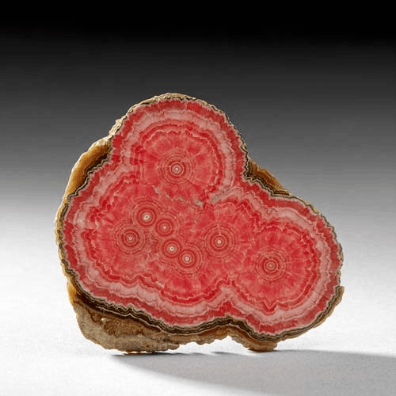
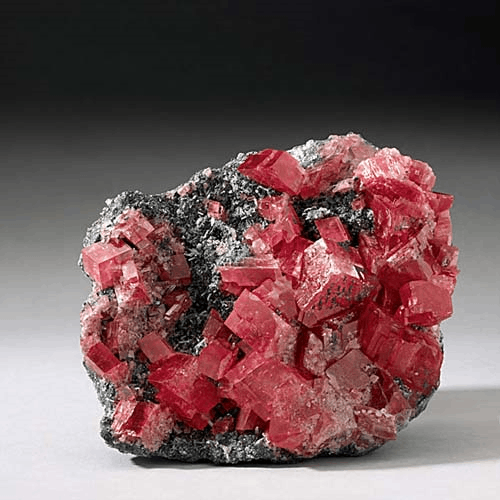
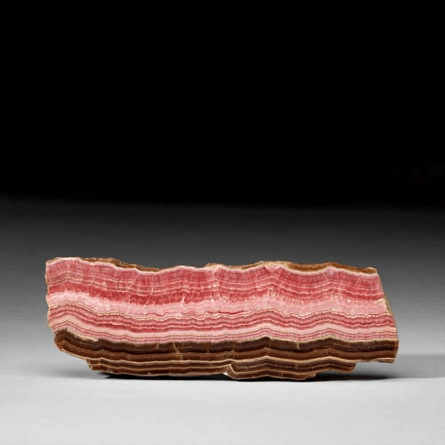

Rhodochrosite - MnCO3
Carbonates




Habit: Pink, rose red, cherry red, yellow, yellowish gray or cinnamon brown; may be banded. Crystals rhombohedral or scalenohedral, may be rounded or saddle-shaped; commonly in bladed aggregates, columnar, stalactitic, botryoidal, compact granular or massive. Vitreous luster, pearly in aggregates; transparent to translucent. White streak.
Environment: A primary mineral in low- to moderate-temperature hydrothermal veins and in metamorphic deposits; common in carbonatites and authigenic and secondary in sediments.
Etymology: From the Greek rhodon, meaning "rose," and chrosis, meaning "coloring."